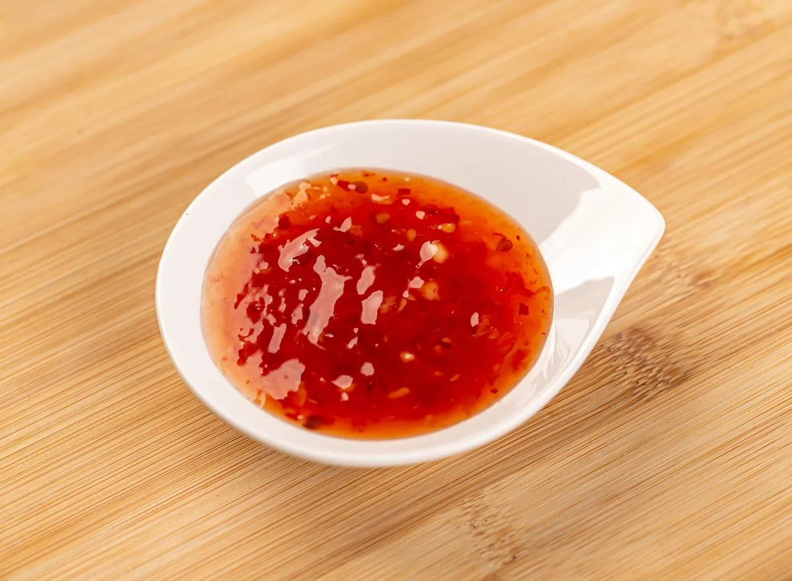

Salsa Agrodolce
Ingredienti
- 25 ml di aceto di mele
- 100 ml di acqua
- 1 pizzico di sale fino
- 30 g di zucchero
- 1 cucchiaino di maizena
- 2 cucchiai di concentrato di pomodoro
Preparazione
1. Inizia sciogliendo la maizena nell'acqua, mescolando bene per evitare la formazione di grumi.
2. Aggiungi l'aceto di mele, lo zucchero, il pizzico di sale e il concentrato di pomodoro al composto.
3. Porta il tutto a fuoco lento in un pentolino, mescolando di tanto in tanto.
4. Continua a cuocere fino a che la salsa raggiunge la densità desiderata. Se necessario, puoi aggiungere un po' più di acqua o maizena per regolare la consistenza.